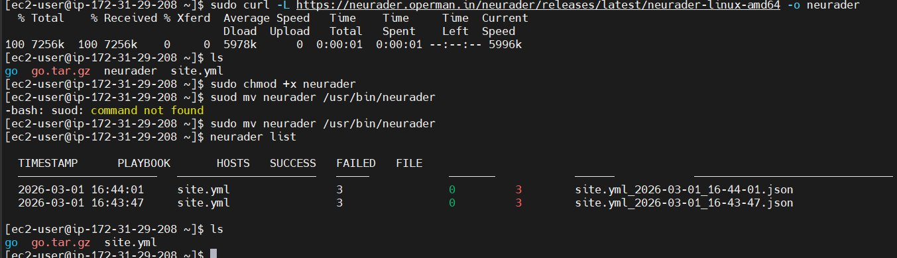
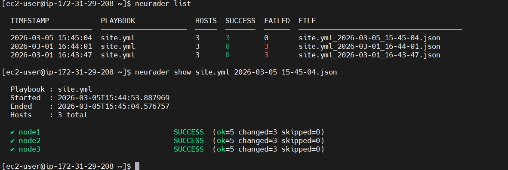
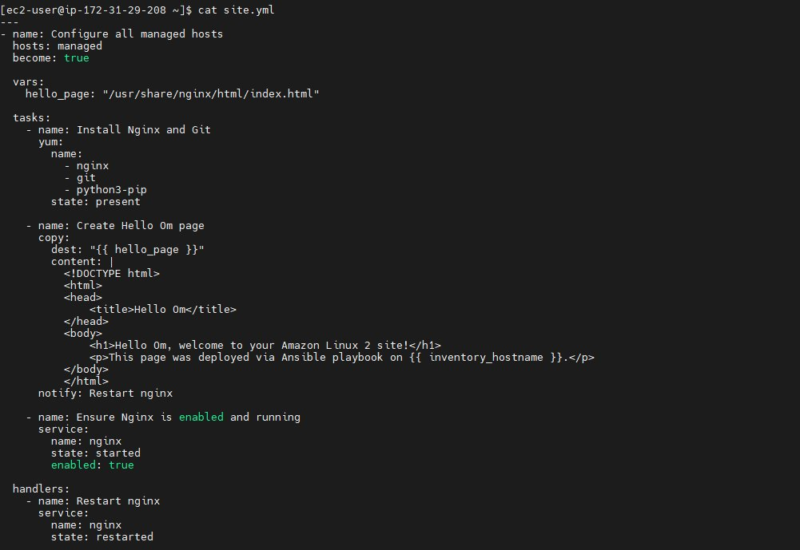
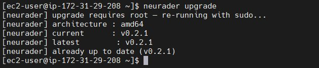
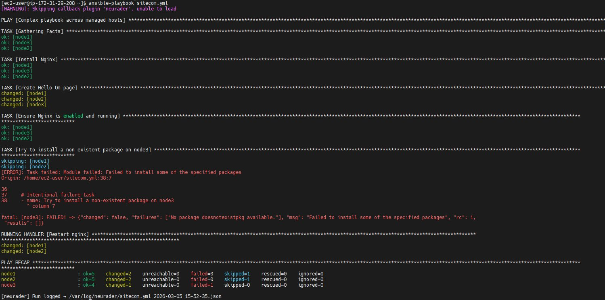
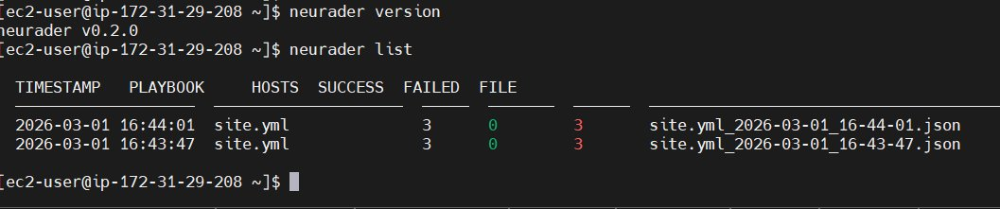

NeuRader
Documentation
Automatic Ansible playbook logging for large infrastructure teams. Every run captured, every host recorded, zero configuration after setup.
Overview
NeuRader sits on your Ansible controller and automatically logs every ansible-playbook run as structured JSON — with per-host status, full error output, and optional Grafana integration.
No agents on managed nodes. No daemons. No open ports. No changes to how you run playbooks. Just drop the binary on your controller and run sudo neurader init once.
Designed for scale. Built for infrastructure teams managing 50–200+ Linux servers with Ansible. When a playbook touches 100 hosts and 3 fail, neurader tells you exactly which hosts failed, which module caused it, and the full error — without scrolling through terminal output.

neurader list — every playbook run captured automatically with per-host success and failure counts.
Installation
Download the binary for your architecture and move it to /usr/bin/.
amd64 — Intel / AMD servers, most cloud VMs
curl -L https://neurader.operman.in/neurader/releases/latest/neurader-linux-amd64 -o neurader chmod +x neurader sudo mv neurader /usr/bin/neurader
arm64 — AWS Graviton, Raspberry Pi 4/5
curl -L https://neurader.operman.in/neurader/releases/latest/neurader-linux-arm64 -o neurader chmod +x neurader sudo mv neurader /usr/bin/neurader
arm — Raspberry Pi 2/3, older embedded controllers
curl -L https://neurader.operman.in/neurader/releases/latest/neurader-linux-arm -o neurader chmod +x neurader sudo mv neurader /usr/bin/neurader
Verify checksum
curl -L https://neurader.operman.in/neurader/releases/latest/checksums.sha256 -o checksums.sha256 sha256sum -c checksums.sha256
Supported Linux distributions
| Install method | Distro | Supported |
|---|---|---|
| apt install ansible | Ubuntu, Debian | ✓ |
| dnf install ansible | RHEL, Rocky, AlmaLinux, Fedora, Amazon Linux 2023 | ✓ |
| yum install ansible | Amazon Linux 2, older RHEL/CentOS | ✓ |
| pip install ansible | Any Linux | ✓ |
| pipx install ansible | Any Linux | ✓ |
| conda install ansible | Any Linux | ✓ |

Typical Ansible inventory — neurader works with any inventory structure, no changes required.
Setup Wizard
Run once after installation. The wizard detects your Ansible environment automatically and handles everything.
sudo neurader init
What the wizard does:
Finds your Ansible binary, Python interpreter, callback plugin directory, and ansible.cfg — regardless of whether Ansible was installed via apt, dnf, pip, pipx, or conda.
Creates /var/log/neurader/ with correct permissions so non-root Ansible processes can write logs, and /etc/neurader/ for configuration.
Prompts for log retention days and optional Grafana credentials. Writes /etc/neurader/neurader.conf.
Writes neurader_callback.py into the detected Ansible callback plugin directory.
Adds callbacks_enabled = neurader to your ansible.cfg so Ansible loads the plugin automatically.
Installs a systemd timer (or cron fallback) to delete logs older than your retention period every 12 hours.
If you provided Grafana credentials, creates the datasource and imports the pre-built dashboard.
Note: neurader init requires root because it writes to /etc/ and /var/log/. After setup, daily commands like neurader list and neurader show run as any user without sudo.
How It Works
neurader lives entirely on the Ansible controller. Managed nodes have zero awareness of it.

After a successful run — neurader silently logs at the bottom. [neurader] Run logged → /var/log/neurader/...

When a host fails — Ansible shows the error in terminal, neurader captures the full details to JSON for later inspection.
Components
neurader binary
A single statically linked Go binary at /usr/bin/neurader. Handles setup via neurader init and provides CLI commands to read and push logs. Never runs as a daemon and opens no ports.
neurader_callback.py
A Python callback plugin loaded automatically by Ansible before every playbook run. Hooks into Ansible's internal event system and captures every host result in real time. Runs inside the Ansible process — no subprocess, no network calls, no side effects.
/var/log/neurader/
Log directory where every playbook run is stored as a JSON file. Named <playbook>_<date>_<time>.json and retained for a configurable number of days.
/etc/neurader/neurader.conf
Configuration file written by neurader init. Stores log retention, Grafana credentials, and the detected paths for the callback directory and ansible.cfg.
Log Format
Every playbook run produces one JSON file in /var/log/neurader/:
{
"playbook": "site.yml",
"start_time": "2026-03-01T16:43:45Z",
"end_time": "2026-03-01T16:44:01Z",
"total_hosts": 3,
"hosts": {
"node1": {
"status": "success",
"error_output": null,
"summary": { "ok": 12, "failures": 0, "changed": 3, "unreachable": 0, "skipped": 1 }
},
"node2": {
"status": "failed",
"error_output": {
"msg": "Permission denied",
"stdout": "",
"stderr": "sudo: a password is required",
"rc": 1,
"module": "ansible.builtin.command"
},
"summary": { "ok": 5, "failures": 1, "changed": 0, "unreachable": 0, "skipped": 0 }
},
"node3": {
"status": "unreachable",
"error_output": {
"msg": "Failed to connect to the host via ssh: Connection timed out"
},
"summary": { "ok": 0, "failures": 0, "changed": 0, "unreachable": 1, "skipped": 0 }
}
}
}

neurader list then neurader show — per-host status, ok/changed/skipped counts at a glance.
CLI Reference
| Command | Root | Description |
|---|---|---|
| neurader init | sudo | Setup wizard — run once after install |
| neurader list | no | List all recorded playbook runs, newest first |
| neurader show <file> | no | Show detailed per-host result of a specific run |
| neurader status | no | Show current config and health check |
| neurader upgrade | no | Upgrade to latest version — handles sudo internally |
| neurader push | no | Backfill all existing logs to Grafana |
| neurader grafana-setup | no | Create Grafana datasource and import dashboard |
| neurader clean | no | Delete logs older than retention period |
| neurader reset-callback | sudo | Restore default callback plugin |
| neurader uninstall | sudo | Remove neurader completely |
| neurader version | no | Print binary version |
Upgrading
Use the built-in upgrade command — it detects your architecture, downloads the correct binary, verifies it, and replaces the current binary automatically.
neurader upgrade [neurader] architecture : amd64 [neurader] current : v0.2.0 [neurader] latest : v0.2.1 [neurader] downloading : .../neurader-linux-amd64 [neurader] progress : 100.0% (7.1 MB / 7.1 MB) [neurader] verified : neurader v0.2.1 [neurader] ✓ upgraded v0.2.0 → v0.2.1 [neurader] ✓ installed at /usr/bin/neurader

neurader upgrade — detects architecture, checks latest version, and upgrades automatically. Handles sudo internally.
No need to re-run neurader init after upgrading. Config, logs, and callback plugin are untouched — only the binary is replaced.
Or upgrade manually:
sudo curl -L https://neurader.operman.in/neurader/releases/latest/neurader-linux-amd64 -o /usr/bin/neurader sudo chmod +x /usr/bin/neurader neurader version
Grafana Integration
neurader can push logs to a Grafana instance automatically after every playbook run.
One-time setup
# run grafana setup (or provide credentials during neurader init) neurader grafana-setup # backfill any runs that happened before Grafana was connected neurader push
After setup, every ansible-playbook run pushes to Grafana automatically — no manual steps.
Grafana credentials
Full URL including port — e.g. http://grafana.company.com:3000
Service account token with Editor role. Create in Grafana → Administration → Service accounts.
Organisation ID. Default is 1 for single-org Grafana instances.
Configuration
All settings are stored in /etc/neurader/neurader.conf written by neurader init. Edit directly to change settings without re-running init.
{
"retention_days": 3,
"grafana_endpoint": "http://grafana.company.com:3000",
"grafana_api_key": "eyJr...",
"grafana_org_id": "1",
"log_dir": "/var/log/neurader",
"callback_dir": "/home/ec2-user/.local/lib/python3.12/site-packages/ansible/plugins/callback",
"ansible_cfg_path": "/etc/ansible/ansible.cfg"
}
| Field | Description | Default |
|---|---|---|
| retention_days | How many days to keep log files | 3 |
| grafana_endpoint | Grafana URL — leave empty to disable | — |
| grafana_api_key | Grafana service account token | — |
| grafana_org_id | Grafana organisation ID | 1 |
| log_dir | Directory where JSON logs are written | /var/log/neurader |
| callback_dir | Ansible callback plugin directory — detected by init | auto |
| ansible_cfg_path | Path to ansible.cfg that was patched | auto |
Customising the callback plugin
The callback plugin is plain Python at <callback_dir>/neurader_callback.py. Edit the v2_playbook_on_stats method to add or remove fields from the JSON payload. To restore the default:
sudo neurader reset-callback